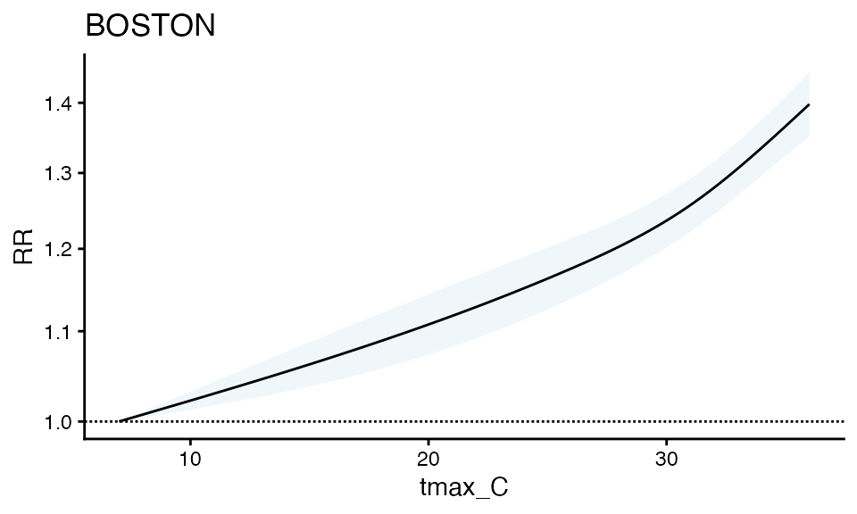
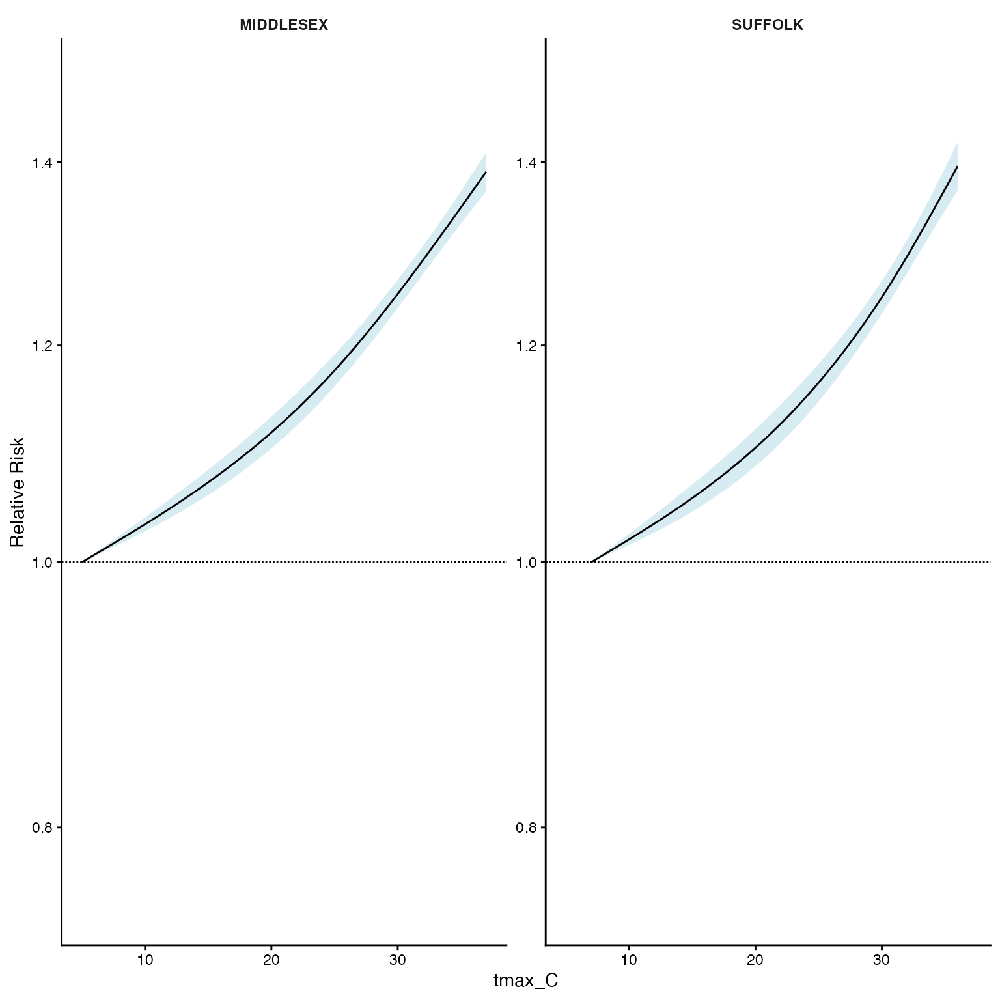
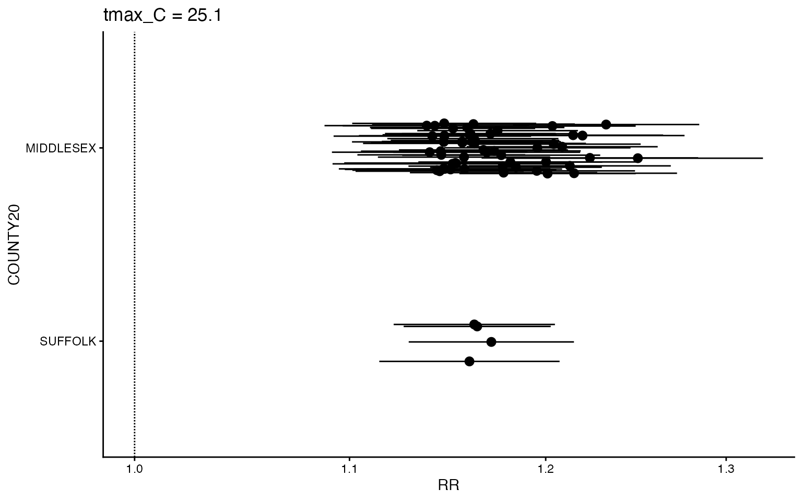
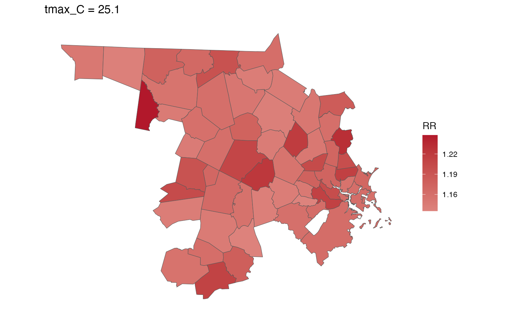
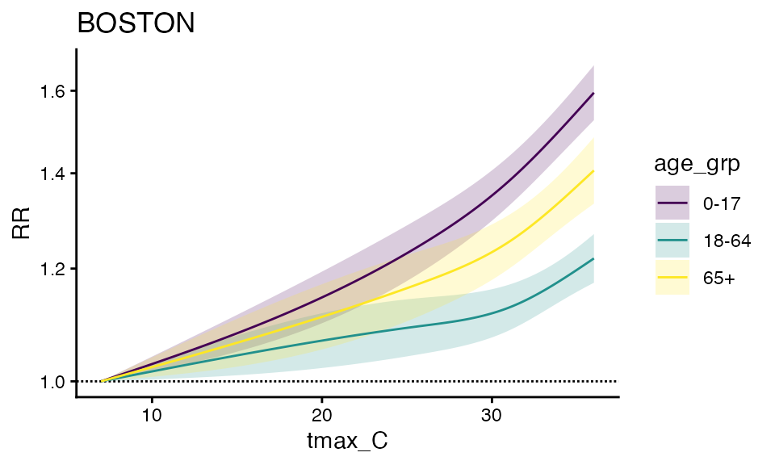
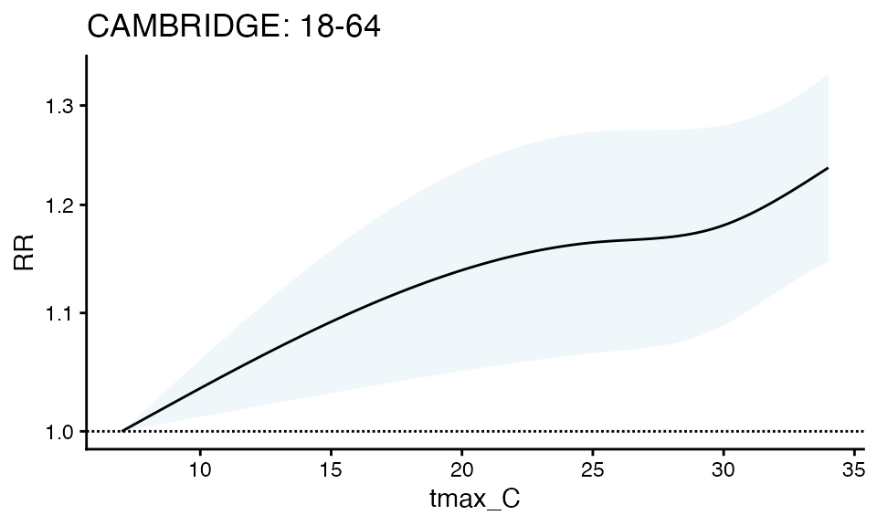
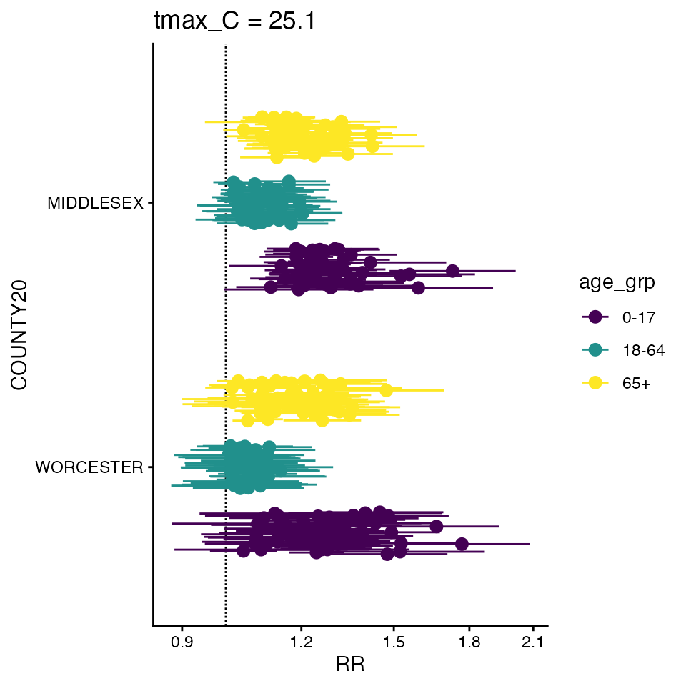
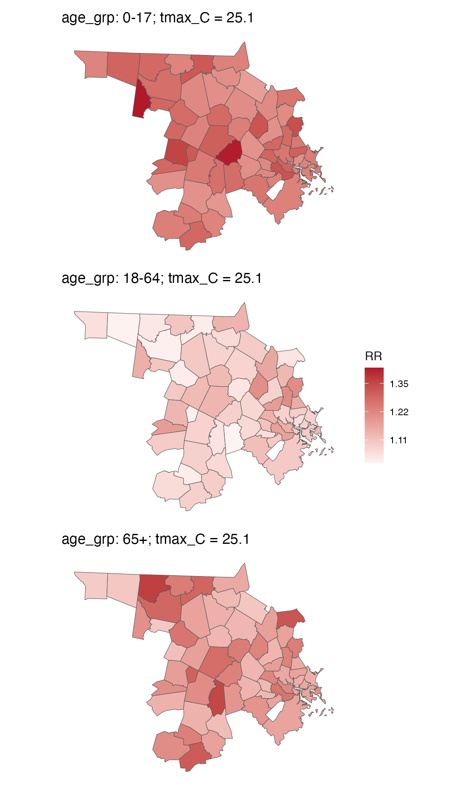

Heat-Health Associations across multiple towns using `cityHeatHealth`
two_stage_demo.RmdWe can easily extend the functionality from
vignette("one_stage_demo") to estimate individual-zone
impacts across many zones.
Model
First create the inputs, using the same exposure_columns
and outcome_columns as before.
library(data.table)
exposure_columns <- list(
"date" = "date",
"exposure" = "tmax_C",
"geo_unit" = "TOWN20",
"geo_unit_grp" = "COUNTY20"
)
ma_exposure_matrix <- make_exposure_matrix(
subset(ma_exposure,COUNTY20 %in% c('MIDDLESEX', 'WORCESTER') &
year(date) %in% 2012:2015), exposure_columns)
#> Warning in make_exposure_matrix(subset(ma_exposure, COUNTY20 %in% c("MIDDLESEX", : check about any NA, some corrections for this later,
#> but only in certain columns
outcome_columns <- list(
"date" = "date",
"outcome" = "daily_deaths",
"factor" = 'age_grp',
"factor" = 'sex',
"geo_unit" = "TOWN20",
"geo_unit_grp" = "COUNTY20"
)
ma_outcomes_tbl <- make_outcome_table(
subset(ma_deaths,COUNTY20 %in% c('MIDDLESEX', 'WORCESTER') &
year(date) %in% 2012:2015), outcome_columns)Now run by using condPois_2stage. This does the Gasp
Extended2stage design in 1 function from these inputs and defaults for
argvar, arglag and maxlag.
Importantly, the estimates in each geo_unit are
bolstered by those in their geo_unit_grp by including a
random effect for geo_unit_grp in the mixmeta
model.
ma_model <- condPois_2stage(ma_exposure_matrix, ma_outcomes_tbl, verbose = 1)
#> -- validation passed
#> -- stage 1
#> -- mixmeta
#> -- stage 2You can still view the RR output from a single zone:
plot(ma_model, "CAMBRIDGE") It does seem like this is a wider confidence interval than the solo model – Perhaps this is expected given the variables around it? Worth investigating in your dataset, as these are simulated data.
You can also plot by geo_unit_grp (TODO – a way to make
this cleaner to get to)
ma_model$`_`$grp_plt
You can also make a forest plot at a specific exposure value
forest_plot(ma_model, 25.1)
#> Warning in forest_plot.condPois_2stage(ma_model, 25.1): plotting by group since
#> n_geos > 20
Finally you can also plot how the RR changes at specific expsoure
units across space – for this you need to bring in an sf
shapefile:
data("ma_towns")
ma_towns
#> Simple feature collection with 351 features and 36 fields
#> Geometry type: MULTIPOLYGON
#> Dimension: XY
#> Bounding box: xmin: 33863.75 ymin: 777634.4 xmax: 330838.8 ymax: 959743
#> Projected CRS: NAD83 / Massachusetts Mainland
#> # A tibble: 351 × 37
#> STATEFP20 COUNTYFP20 COUSUBFP20 COUSUBNS20 GEOID20 NAMELSAD20 LSAD20
#> <chr> <chr> <chr> <chr> <chr> <chr> <chr>
#> 1 25 003 34970 00618269 2500334970 Lenox town 43
#> 2 25 003 44385 00598751 2500344385 New Ashford town 43
#> 3 25 003 51580 00619422 2500351580 Otis town 43
#> 4 25 015 29265 00618202 2501529265 Hatfield town 43
#> 5 25 027 12715 00618359 2502712715 Charlton town 43
#> 6 25 011 05560 00619378 2501105560 Bernardston town 43
#> 7 25 003 59665 00619426 2500359665 Sandisfield town 43
#> 8 25 003 79985 00619430 2500379985 Williamstown to… 43
#> 9 25 017 31540 00618226 2501731540 Hudson town 43
#> 10 25 017 37875 00619404 2501737875 Malden city 25
#> # ℹ 341 more rows
#> # ℹ 30 more variables: CLASSFP20 <chr>, MTFCC20 <chr>, CNECTAFP20 <chr>,
#> # NECTAFP20 <chr>, NCTADVFP20 <chr>, FUNCSTAT20 <chr>, ALAND20 <dbl>,
#> # AWATER20 <dbl>, INTPTLAT20 <chr>, INTPTLON20 <chr>, TOWN20 <chr>,
#> # TOWN_ID <int>, FIPS_STCO2 <dbl>, COUNTY20 <chr>, TYPE <chr>,
#> # FOURCOLOR <int>, AREA_ACRES <dbl>, SQ_MILES <dbl>, POP1960 <dbl>,
#> # POP1970 <dbl>, POP1980 <dbl>, POP1990 <dbl>, POP2000 <dbl>, …
head(ma_towns)
#> Simple feature collection with 6 features and 36 fields
#> Geometry type: MULTIPOLYGON
#> Dimension: XY
#> Bounding box: xmin: 48979.71 ymin: 869246.6 xmax: 166957.3 ymax: 942838.1
#> Projected CRS: NAD83 / Massachusetts Mainland
#> # A tibble: 6 × 37
#> STATEFP20 COUNTYFP20 COUSUBFP20 COUSUBNS20 GEOID20 NAMELSAD20 LSAD20 CLASSFP20
#> <chr> <chr> <chr> <chr> <chr> <chr> <chr> <chr>
#> 1 25 003 34970 00618269 250033… Lenox town 43 T1
#> 2 25 003 44385 00598751 250034… New Ashfo… 43 T1
#> 3 25 003 51580 00619422 250035… Otis town 43 T1
#> 4 25 015 29265 00618202 250152… Hatfield … 43 T1
#> 5 25 027 12715 00618359 250271… Charlton … 43 T1
#> 6 25 011 05560 00619378 250110… Bernardst… 43 T1
#> # ℹ 29 more variables: MTFCC20 <chr>, CNECTAFP20 <chr>, NECTAFP20 <chr>,
#> # NCTADVFP20 <chr>, FUNCSTAT20 <chr>, ALAND20 <dbl>, AWATER20 <dbl>,
#> # INTPTLAT20 <chr>, INTPTLON20 <chr>, TOWN20 <chr>, TOWN_ID <int>,
#> # FIPS_STCO2 <dbl>, COUNTY20 <chr>, TYPE <chr>, FOURCOLOR <int>,
#> # AREA_ACRES <dbl>, SQ_MILES <dbl>, POP1960 <dbl>, POP1970 <dbl>,
#> # POP1980 <dbl>, POP1990 <dbl>, POP2000 <dbl>, POP2010 <dbl>, POP2020 <dbl>,
#> # POPCH10_20 <dbl>, HOUSING20 <dbl>, SHAPE_AREA <dbl>, SHAPE_LEN <dbl>, …
spatial_plot(ma_model, shp = ma_towns, exposure_val = 25.1)
and You can get an RR table
getRR(ma_model)
#> TOWN20 COUNTY20 tmax_C RR RRlb RRub model_class
#> <char> <char> <num> <num> <num> <num> <char>
#> 1: ACTON MIDDLESEX 7.0 1.000000 1.0000000 1.000000 condPois_2stage
#> 2: ACTON MIDDLESEX 7.1 1.000516 0.9999447 1.001088 condPois_2stage
#> 3: ACTON MIDDLESEX 7.2 1.001033 0.9998894 1.002177 condPois_2stage
#> 4: ACTON MIDDLESEX 7.3 1.001549 0.9998343 1.003267 condPois_2stage
#> 5: ACTON MIDDLESEX 7.4 1.002067 0.9997795 1.004359 condPois_2stage
#> ---
#> 32510: WORCESTER WORCESTER 33.6 1.288946 1.2000454 1.384432 condPois_2stage
#> 32511: WORCESTER WORCESTER 33.7 1.290732 1.2010888 1.387065 condPois_2stage
#> 32512: WORCESTER WORCESTER 33.8 1.292520 1.2021282 1.389709 condPois_2stage
#> 32513: WORCESTER WORCESTER 33.9 1.294311 1.2031641 1.392363 condPois_2stage
#> 32514: WORCESTER WORCESTER 34.0 1.296105 1.2041968 1.395027 condPois_2stageModel by factor
Only a small change is required to run the model by factor, e.g., age_grp:
ma_outcomes_tbl_fct <- make_outcome_table(
subset(ma_deaths,COUNTY20 %in% c('MIDDLESEX', 'WORCESTER') &
year(date) %in% 2012:2015),
outcome_columns,collapse_to = 'age_grp')
head(ma_outcomes_tbl_fct)
#> date TOWN20 COUNTY20 age_grp daily_deaths
#> <Date> <char> <char> <char> <int>
#> 1: 2012-05-01 ACTON MIDDLESEX 0-17 25
#> 2: 2012-05-01 ACTON MIDDLESEX 18-64 24
#> 3: 2012-05-01 ACTON MIDDLESEX 65+ 24
#> 4: 2012-05-01 ARLINGTON MIDDLESEX 0-17 50
#> 5: 2012-05-01 ARLINGTON MIDDLESEX 18-64 48
#> 6: 2012-05-01 ARLINGTON MIDDLESEX 65+ 50
#> strata strata_total
#> <char> <num>
#> 1: ACTON:yr2012:mn5:dow3:age_grp0-17 147
#> 2: ACTON:yr2012:mn5:dow3:age_grp18-64 136
#> 3: ACTON:yr2012:mn5:dow3:age_grp65+ 140
#> 4: ARLINGTON:yr2012:mn5:dow3:age_grp0-17 270
#> 5: ARLINGTON:yr2012:mn5:dow3:age_grp18-64 249
#> 6: ARLINGTON:yr2012:mn5:dow3:age_grp65+ 262Run the model
ma_model_fct <- condPois_2stage(ma_exposure_matrix, ma_outcomes_tbl_fct, verbose = 1)
#> < age_grp : 0-17 >
#> -- validation passed
#> -- stage 1
#> -- mixmeta
#> -- stage 2
#> < age_grp : 18-64 >
#> -- validation passed
#> -- stage 1
#> -- mixmeta
#> -- stage 2
#> < age_grp : 65+ >
#> -- validation passed
#> -- stage 1
#> -- mixmeta
#> -- stage 2And plot
plot(ma_model_fct, "CAMBRIDGE")
plot(ma_model_fct$`18-64`, "CAMBRIDGE", title = 'CAMBRIDGE: 18-64')
forest_plot(ma_model_fct, 25.1)
#> Warning in forest_plot.condPois_2stage_list(ma_model_fct, 25.1): plotting by
#> group since n_geos > 20
spatial_plot(ma_model_fct, shp = ma_towns, exposure_val = 25.1) and You can get an RR table
getRR(ma_model_fct)
#> TOWN20 COUNTY20 tmax_C RR RRlb RRub age_grp
#> <char> <char> <num> <num> <num> <num> <char>
#> 1: ACTON MIDDLESEX 7.0 1.000000 1.0000000 1.000000 0-17
#> 2: ACTON MIDDLESEX 7.1 1.000694 0.9999329 1.001456 0-17
#> 3: ACTON MIDDLESEX 7.2 1.001389 0.9998659 1.002915 0-17
#> 4: ACTON MIDDLESEX 7.3 1.002085 0.9997992 1.004375 0-17
#> 5: ACTON MIDDLESEX 7.4 1.002781 0.9997327 1.005838 0-17
#> ---
#> 97538: WORCESTER WORCESTER 33.6 1.300465 1.2147953 1.392175 65+
#> 97539: WORCESTER WORCESTER 33.7 1.302040 1.2155758 1.394654 65+
#> 97540: WORCESTER WORCESTER 33.8 1.303616 1.2163410 1.397154 65+
#> 97541: WORCESTER WORCESTER 33.9 1.305195 1.2170919 1.399676 65+
#> 97542: WORCESTER WORCESTER 34.0 1.306775 1.2178291 1.402218 65+
#> model_class
#> <char>
#> 1: condPois_2stage_list
#> 2: condPois_2stage_list
#> 3: condPois_2stage_list
#> 4: condPois_2stage_list
#> 5: condPois_2stage_list
#> ---
#> 97538: condPois_2stage_list
#> 97539: condPois_2stage_list
#> 97540: condPois_2stage_list
#> 97541: condPois_2stage_list
#> 97542: condPois_2stage_list